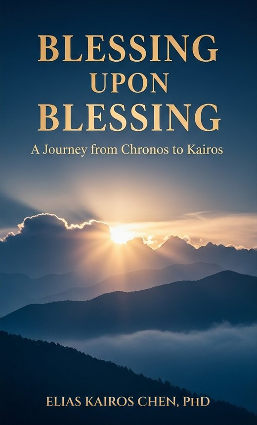
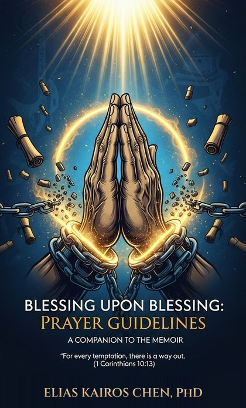

The memoir
Blessing Upon Blessing
An autobiography of faith, loss, and divine transformation, in thirteen chapters from a shophouse altar in Singapore to a mountain blessing in the Philippines.
Read Chapter 1This book was never supposed to exist.
The youngest of eleven children in an ancestor-worshipping home in 1960s Singapore. A wife who ministered healing to others while battling her own incurable cancer. Four years of wilderness after her passing. A divine prompting that he would meet a doctor. And a name he had carried unknowingly for over sixty years.
Chapter 1 takes about 15 minutes to read.

From the Foreword
From Chapter 1
“Before I formed you in the womb I knew you, before you were born I set you apart” Jeremiah 1:5
The acrid sweetness of burning incense filled our living room every morning, carrying whispered prayers to ancestors who watched over us from their mahogany tablets. As Singapore's youngest of eleven children in the mid-1960s, I learned to navigate between worlds before I could fully understand what either one meant—the ancient traditions of my Chinese immigrant family and the rapidly modernizing nation taking shape around us.
My third sister, closest to me in age and affection, would sometimes tell me stories about our father that seemed too strange to believe. “Ah Pa was baptized in the sea,” she would say matter-of-factly, as if discussing what we had eaten for dinner. “Before you were born, when he first came from Fujian.”
“Each chapter of this book represents a kairos moment—times when God's eternal purposes intersected with my ordinary life in extraordinary ways.”
With a Foreword, “The Name That Changed Everything,” and an Epilogue, “For Such a Time as This.”
“Four years of grief taught me that God's silence is not God's absence.”
“God writes sequels to stories we thought had ended.”
Start with the memoir. The two companions take its themes into your own prayer and daily reading, and each can also be used on its own.
The memoir
An autobiography of faith, loss, and divine transformation, in thirteen chapters from a shophouse altar in Singapore to a mountain blessing in the Philippines.
Read Chapter 1
The prayer companion
Biblical frameworks for applying the memoir's principles in prayer. Suitable for small groups, counseling and pastoral care.
The 365-day devotional
A full year of daily readings through the memoir's themes. Each day gives you a Scripture foundation, a connection to the memoir, a life application, a prayer focus and a faith declaration.
Read the first weekEnter your email and we'll send you the password and download link for the PDF editions, free of charge.